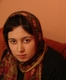

پذيرش > تریبون > مقالات > اینجا زندان است و من زنی در میان زنانی كه دردهايشان مثال روشن نابرابري (...)


 اینجا زندان است و من زنی در میان زنانی كه دردهايشان مثال روشن نابرابري است اینجا زندان است و من زنی در میان زنانی كه دردهايشان مثال روشن نابرابري است
28 آبان 1386 - نوشته مریم حسین خواه از بند 3عمومی زندان زنان اوین - نسخه قابل چاپ
اينجا زندان است. بند زنان زندان اوين. اولين بار نيست كه به اینجا مي آيم. بار اول نيست كه به اوين مي آيم. بار اول خبرنگاري بودم كه با رئیس زندان سلول به سلول جلو مي رفتم و براي اولين بار سرگذشت زناني كه به جرم اعتياد، فحشا، و قتل اسير چهارديواري زندان بودند را مي شنيدم كه بنويسم اما فقط چند كلمه؛ همان قدر كه بودن رئيس اجازه مي داد. همان روز بود كه همه زندانيان در حضور مسئولان بند از شرايط زندان تعريف كردند و گفتند كه مشكلي ندارند، اما هنگام رفتنم، كاغذ مچاله ای را در جيبم گذاشتند كه "به داد ما برسيد، اين جا هيچ كس به فكر ما نيست".
بار دوم من هم زنداني بودم. درست مثل همه آن زندانيان در بند. 30 نفر از فعالان زن در انفرادي بودند و من آشفته و نگران، ميان غم زناني كه هميشه از آنان مي نوشتم، و سرنوشت نامعلوم دوستانم سرگردان بودم. آن روز براي آنها مهماني بودم كه به زودي مي رفت.
اين بار، بار سوم اما، همه چيز متفاوت است. حالا من با اين وثيقه صد ميليون توماني يكي از خودشان هستم. يكي از صدها زني كه سال ها است گرفتار ديوارهاي بلند اوین اند و هيچ دادرسي ندارند. نه قانون به فريادشان مي رسد، نه خانواده و نه هيچ كس ديگر. اصلا معناي بي پناهي را فقط اينجاست كه مي توان فهميد. در چشمان زناني كه اگر قانون كمي، فقط كمي، عادلانه تر بود آنها اينك در خانه هايشان در كنار فرزندانشان بودند. زناني كه هيچ شباهتي به كليشه هاي ما از زنان زنداني ندارند. زناني كه برخي به خاطر تاب نياوردن قوانين نابرابر خود مجري قانون شده اند و به گفته قانونگذار قانون شكن.
برخي به خاطر ناآگاهي و فقري كه هميشه دامن گير زنان بود گرفتار شده اند و برخي همچون ليلا به خاطر اين كه از دادگاه درخواست نفقه كرده اند! باورش سخت است اما ليلا 47 ساله، بيست سال است كه مي خواهد از شوهري كه او و كودك عقب مانده اش را رها كرده و رفته، نفقه اش را بگيرد و هيچ دادگاهي هنوز به داد او نرسيده. ليلا با چشمان پر از اشك به زمين خيره شده و مي گويد:« هنوز دو سال از ازدواجمان نگذشته بود كه فهميدم شوهرم قبل از من زن داشته. دختر عقب مانده ام كه به دنيا آمد ما را رها كرد و رفت. من ماندم و دو بچه كوچك كه يكي هم عقب مانده بود و بايد خرج دوا و درمانش را مي دادم. شوهرم خانه داشت، ماشين داشت، مال و اموال داشت، من فقط آن قدري می خواستم كه خرج اين دو بچه بدبخت و مريض را بدهم اما او نداد و هيچ دادگاهي هم محكومش نكرد.» وقتي می پرسم:«چرا طلاق نگرفتي؟ مي گويد"هنوز اميدم به قانون است كه شاید نفقه فرزندانم را بگيرم." مي گويد: «فقط ده ميليون تومان هم براي بيست سال زندگي بدهد مي روم و خودم را خلاص مي كنم. نمي دهد اما... دو روز پيش شوهر ليلا در دادگاه گفته نفقه نمي دهد و ليلا و بچه هايش را كتك زده. قاضي ليلايي را كه كتك خورده و شوهرش را كه كتك زده با هم به زندان فرستاده به جرم به هم ريختن نظم دادگاه. آن هم به زندان اوين. شوهرش همان شب سند گذاشته و آزاد شده و ليلا با چشماني اشكبار و نگاهي ناباور در انتظار اين است كه شايد كسي برايش سند بگذارد و آزادش كند...
هر گاه از بي حقوقي زنان مي گويیم نفقه و مهريه را به رخ مان مي كشند، همه با ین جمله آشناییم که« با داشتن اين ها ديگر چه مي خواهيد؟!) ليلاها و ليلاها، اما نه مهريه اي دارند كه به اتكاي آن بتوانند زندگي كنند و نه نفقه اي. تجربه ليلا مي گويد «مرد اگر بخواهد نفقه نمي دهد» و هيچ قانون و دادگاهي نمي تواند او را وادار به پرداخت نفقه كند و نبايد حقوق بديهي ای همچون برابري در دیه، ارث، شهادت، حق داشتن طلاق، ... را به بهانه داشتن نفقه و مهريه اي كه گرفتن آن گاه ناممكن مي شود ناديده گرفت.
ليلا يكي از صدها زني است كه به خاطر قانون نابرابر، زندگي اش را باخته و حالا از تمام دنيا فقط يك سقف آهني دارد و ديوارهايي كه تمام نمي شود. اين ها را که مي نويسم، چند قدم آن طرف تر از من زني جوان که بدنش کبود کبود است در حال گريستن است. گريه كه نه ضجه مي زند. سر به ديوار مي كوبد. فرياد مي زند. و مي خواهد خودش را بكشد، با روسري ای كه به گلو گره زده است. شايد همين نااميدي از قانون و عدالت است كه او را تا چند قدمي مرگ آورده است.
شبي كه روز قبلش تهديد به بازداشت شده بودم در فكر برنامه ای بودم که كه در زندان دوام بياورم. اما حالا مي ترسم وقت كم بياورم. ميان اين همه زني كه زندگي و دردهاي هر كدامشان مثالي روشن از نابرابري است.
ارسال به
بالاترین
،
توییتر
،
فریندفید
،
فیسبوک
در همين بخش :
 دهمین دورۀ مراسم تندیس صدیقه دولت آبادی ۱۳۹۲ دهمین دورۀ مراسم تندیس صدیقه دولت آبادی ۱۳۹۲
کارت پستالهایی به بهانهی هشت مارس و به یاد همهی مبارزین راه برابری
بیانیه بیش از 350 تن از مدافعان حقوق زنان به مناسبت روز جهانی زن؛ زنان هر روز فرودستتر میشوند
لباسی که برای تن ما دوخته اند! /اعظم بهرامی
چالشها و چشمانداز فعالیت مدنی زنان
ديگر بخش ها :
طرح یک میلیون امضا
|
مقالات
|
سایت نوشته ها
|
اخبار
|
گزارش كمپين
|
گفت و گو
|
علیه سکوت
|
كوچه به كوچه
|
نامه های شما
|
گزارش ویژه
|
گفتگو با اعضا
|
ویژه سالگرد کمپین
|
تصویر برابری
|
دل آرام علی
|
تریبون
|
مقالات
|
تاریخ شفاهی
|
خارج از چارچوب
|
کتابخانه
|
درباره کمپین
|
کمپین در شهرها
|
کمپین در بند
|
صدای تغییر
|
ویژه 22 خرداد
|
لایحه حمایت از خانواده
|
گالری
|
عشا مومنی
|
امیر یعقوبعلی
|
خدیجه مقدم
|
راحله عسگری زاده و نسیم خسروی
|
پروین اردلان،جلوه جواهری، مریم حسین خواه، ناهید کشاورز
|
زینب پیغمبرزاده
|
سعیده امین، سارا ایمانیان، محبوبه حسین زاده، ناهید کشاورز و همایون نامی
|
احترام شادفر
|
نسیم سرابندی زاده،فاطمه دهدشتی
|
وبلاگ مهمان
|
پرونده خرم آباد
|
دستگیری ها
|
مریم مالک
|
پرستو اللهیاری
|
مهرنوش اعتمادی
|
سمیه رشیدی
|
Other Languages
|
همراهان
|
«فراخوان کمپین ده روز با بهاره هدایت»
| English
|